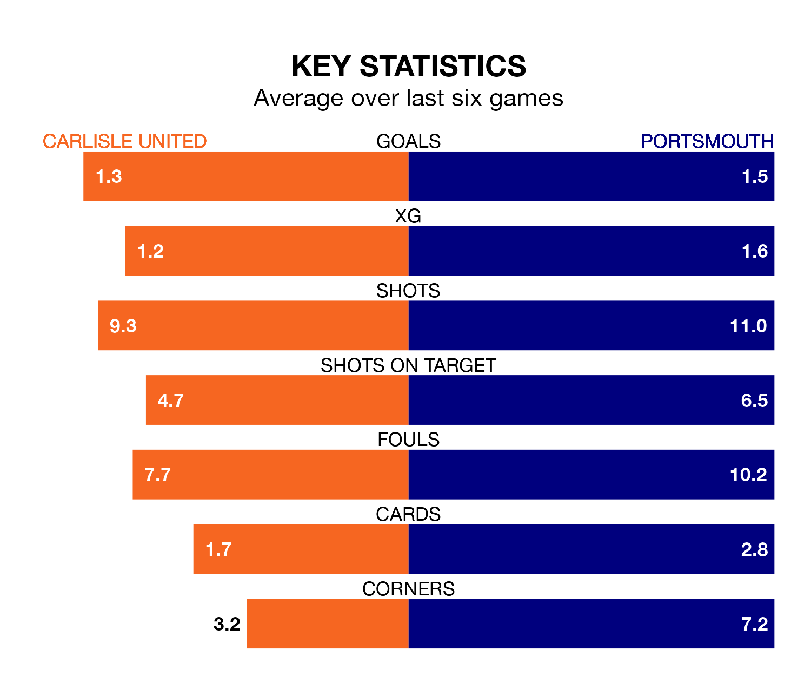

Mid-season relegation candidates Carlisle United face a challenge against high-flying Portsmouth at Brunton Park on Saturday.
Carlisle United are rooted to the bottom of the EFL League One table, and have picked up four wins and eight draws in their 30 games to date.
Pompey, meanwhile, are top of the standings with 63 points, having won 18 and drawn nine of their first 31 matches.
With Will Norris between the sticks, Portsmouth can rely on one of the league's safest pair of hands. He has kept 14 clean sheets in his 31 appearances this season, and no 'keeper has prevented the opposition scoring more often in EFL League One.
In Carlisle's net, Jokull Andersson has one clean sheet in six games. He has conceded a goal every 80 minutes, 40% more often than the 112 minutes between goals for Norris.
With 26 goals in 30 games so far this season, United are scoring at below the league average rate with 0.9 goals per game. And they are conceding more than average, letting in 50 goals at a rate of 1.7 per game.
Pompey, meanwhile, are above average scorers, with 1.6 goals per game, compared to a league average of 1.3. They have conceded 0.9 goals per game.
The hosts are in bad form in EFL League One, with one win and five losses from their last six games.
With three wins and a draw over that period, the away side's form is much better – they have taken 10 points from 18, compared to Carlisle's three.
Carlisle's last match was on February 3, a 3-2 loss against Leyton Orient, with Josh Vela and Sean Maguire getting the goals for Carlisle.
Portsmouth beat Northampton Town 4-1 last time out, also on February 3, with Patrick Lane (two), Callum Lang and Connor Ogilvie on the scoresheet.
Updated: 10:01 (UTC), 06/02/24